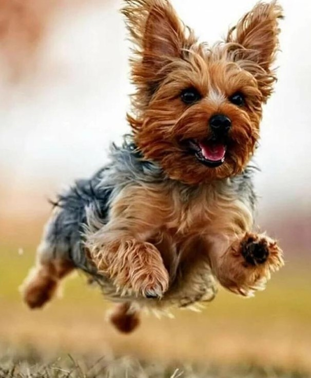
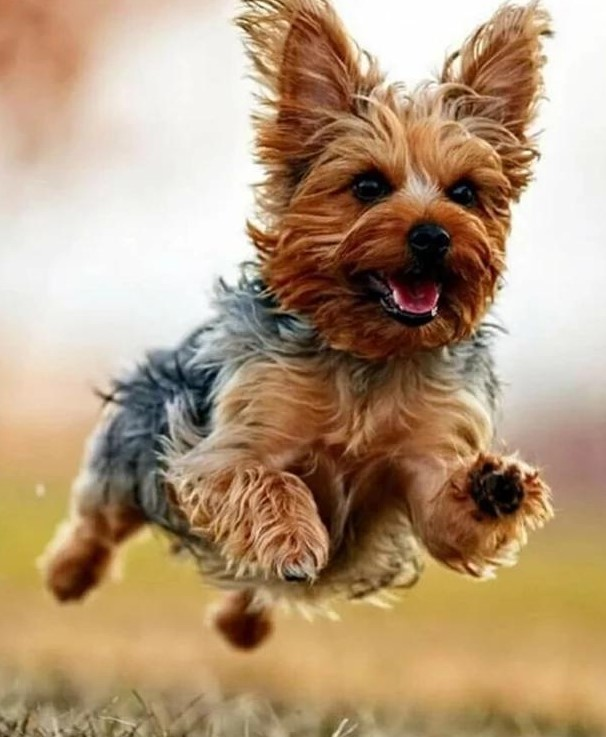

Популярные породы собак
Померанский шпиц
Померанский шпиц выглядит как детская игрушка. Этот пушистый колобочек станет верным другом и звонким лаем скрасит самый пасмурный день.
Краткая информация
- Страна происхождения: Германия
- Вес: 1,4-3,2 кг (желательно около 2 кг)
- Рост (высота в холке): 18-24 см
- Продолжительность жизни: 12-16 лет
Основные моменты
- Померанский шпиц легко находит общий язык с хозяином, к которому испытывает безграничную любовь и верность.
- Это прекрасный друг и компаньон для сознательных детей. От покупки животного для проказников младшего возраста лучше воздержаться.
- Отличается прекрасными сторожевыми качествами и громким «звоночком» извещает о прибытии нежданного гостя.
- Не подходит для содержания в вольере или на цепи. Квартира или загородный дом – идеальное место.
- Померанский шпиц нуждается в тщательном и регулярном уходе, активном отдыхе и длительных прогулках. Прежде чем заводить представителя этой породы, стоит трезво оценить свои силы.
- Собаки любят лаять, чем изрядно докучают соседям, а нередко – и собственным хозяевам.
- При слабохарактерности владельца шпиц склонен проявлять доминантность и упрямство, с которыми нелегко справиться.
- Порода не подходит для начинающих собаководов.
Чихуахуа
Чихуахуа – декоративные собаки экстремально малого размера. Бесконечно преданы хозяину и чрезвычайно самолюбивы.
Краткая информация
- Страна происхождения: Мексика
- Вес: 0,5-3 кг
- Рост (высота в холке): 15-23 см
- Продолжительность жизни: 11-14 лет
Основные моменты
- В отношениях с более крупными собаками ведут себя на равных. Облаять 50-килограммовую овчарку для чихуахуа – обычное дело.
- Способны ладить с другими домашними питомцами, если те согласны признавать их авторитет.
- Идеальные компаньоны, готовые сопровождать хозяина везде, где это только возможно.
- Игривы и активны, но зачастую требуют повышенного внимания к собственной персоне.
- Испытывают сильную привязанность к хозяину и следят за каждым его шагом.
- Легко адаптируются к любой обстановке и могут довольствоваться редкими и короткими прогулками, а при необходимости и полностью обходиться без них.
- Не согласны мириться с одиночеством и длительными отлучками хозяина.
- Очень обидчивы и подвержены частым вспышкам ревности.
- Чихуахуа полностью взрослеют к первому году жизни.
Корги
Корги ─ удивительная собака, любимая порода Ее Величества королевы Великобритании Елизаветы ІІ, маленькая овчарка с большим и бесстрашным сердцем.
Краткая информация
- Страна происхождения: Великобритания
- Вес: 9-13 кг
- Рост (высота в холке): 25-30 см
- Продолжительность жизни: 9-12 лет
Основные моменты
- Корги – собака, идеально подходящая большой и дружной семье. Прекрасно чувствует себя как в условиях городской квартиры, так и в загородном жилье.
- Главные черты характера животного – жизнерадостность, доброжелательность и активность. При практически полном отсутствии агрессивности в поведении, корги – отважная собака с высокоразвитым интеллектом.
- Пемброк – порода собак, которые сильно нуждаются в человеческом обществе. Держать ее на улице, а уж тем более на привязи абсолютно недопустимо.
- Вельш-корги пемброк очень чутко воспринимает настроение своих хозяев и никогда не будет вам докучать некстати.
- Они очень активны и любят подвижные игры, хорошо дрессируются.
- Любовь корги к детям стала уже легендой. Абсолютно безо всякой опаски вы можете оставить с ним даже малыша – пемброк стоически вытерпит все его шалости.
- Как истинно пастушья собака, корги любят и умеют работать в команде. Они не склонны к доминированию, но слушаться будут только хозяина, который относится к ним с пониманием и любовью. Истеричный, нервный и вспыльчивый человек вряд ли может рассчитывать на любовь и дружбу вельш-корги пемброка – слишком уж умна эта собака.
- Уход за животным несложен. Купание нечастое, поскольку шерсть имеет хорошие водоотталкивающие свойства и грязь не собирает. Систематический груминг требуется только два раза в год – во время активной линьки. Питание – сбалансированное. Помня о склонности пемброка к перееданию, нужно контролировать количество пищи.
- Строение тела вельш-корги пемброка требует внимательного отношения к характеру физических нагрузок. Чтобы избежать травм позвоночника, нужно избегать прыжков с высоты на землю. Многие заводчики рекомендуют оберегать щенков от передвижения вниз по лестницам. Не рекомендуется применять шлейку, лучше сразу приучайте пса к ошейнику. Подстилка для питомца не должна быть излишне мягкой. Идеально, если это будет специальный ортопедический матрац.
- Людям, которые собираются становиться заводчиками, следует знать, что эта порода трудна в разведении, поэтому следует посоветоваться со специалистами, чтобы трезво оценить свои силы и принять правильное решение.
Немецкая овчарка
Немецкая овчарка живет бок о бок с человеком с незапамятных времен. Сегодня она является одной из самых популярных и узнаваемых пород собак на планете.
Краткая информация
- Страна происхождения: Германия
- Вес: кобели 30-40 кг, суки 22-32 кг
- Рост (высота в холке): кобели 60-65 см, суки 55-60 см
- Продолжительность жизни: 10-13 лет
Основные моменты
- Немецкие овчарки могут быть как служебными собаками, выполняющими охранные или розыскные функции, так и компаньонами для семей.
- Преданные и покладистые питомцы беспрекословно признают авторитет хозяина.
- Немецкие овчарки входят в тройку самых умных пород собак (вместе с бордер-колли и пуделями).
- Они нуждаются в человеческом обществе и физических нагрузках.
- Отлично ладят с детьми всех возрастов.
- Способны жить не только в помещении, но и в вольере.
- Средняя продолжительность жизни немецкой овчарки – 9-13 лет, после 7 лет необходим строгий контроль за состоянием здоровья.
Йоркширский терьер
Йоркширский терьер – одна из самых популярных в мире комнатно-декоративных пород собак. Йорк очарователен внешне, энергичен, ласков и является отличным компаньоном.
Краткая информация
- Страна происхождения: Англия
- Вес: 2-3,2 кг
- Рост (высота в холке): 18-23 см
- Продолжительность жизни: 12-15 лет
Основные моменты
- Йоркширский терьер – превосходная собака, в характере которой смелость, резвость, выносливость сочетаются с удивительной деликатностью, интеллигентностью и сообразительностью.
- Отличный друг для всех членов семьи, но хозяином считает одного, кому и предан беззаветно.
- Йорк – веселый товарищ для детей и подростков, готовый в любой момент со всей своей энергией присоединиться к играм и забавам.
- Для пожилых людей, особенно одиноких, он станет хорошим компаньоном, преданным и бескорыстным.
- Комфортно чувствует себя как в малогабаритных квартирах, так и в загородных домах.
- Благодаря своей сообразительности, йорк легко поддается дрессировке, однако процесс осложняет его неусидчивость.
- Йоркширский терьер, как любая декоративная собака, требует внимания к своей внешности. Длинношерстые собаки нуждаются в еженедельном купании, короткошерстых йорков купают раз в 2-3 недели. Стандартные стрижки можно научиться делать самостоятельно, а модельные прически создают груминг-мастера. Во время процедур собака любит покапризничать.
- Йорк требователен к еде и переборчив. Многие продукты ему противопоказаны.
- К здоровью этой крошечной собаки нужно относиться с особым вниманием и стараться уберечь ее от травм.
- Чтобы купить гарантированно чистокровного йоркширского терьера, следует обратиться к заводчику с проверенной репутацией.
Лабрадор
Лабрадор – одна из самых популярных пород в современном мире. Это идеальный питомец для семей с детьми, охотников, спасателей и людей с ограниченными возможностями.
Краткая информация
- Страна происхождения: Великобритания
- Вес: кобели 27-34 кг, суки 25-32 кг
- Рост (высота в холке): кобели 56-57 см, суки 54-56 см
- Продолжительность жизни: 12-13 лет
Основные моменты
- Лабрадор-ретривер относится к средне-крупным собакам.
- Основная заслуга в создании породы принадлежит английским энтузиастам.
- Лабрадора можно содержать в квартире, но при этом требуются длительные ежедневные прогулки и достаточные физические нагрузки.
- Собака создана для сопровождения на охоте, поэтому не обладает хорошими охранными качествами, зато отлично ладит с детьми и животными.
- Главной проблемой содержания заводчики называют контроль за питанием и весом, так как лабрадоры – известные любители поесть.
- Лабрадоры-ретриверы хорошо поддаются дрессировке, если проявить терпение и находчивость в процессе обучения.
- Собаки не доставляют особенных проблем в уходе, отличаются неплохим здоровьем.
- Стандартом породы сегодня допускаются черный, палевый и шоколадный окрас.
Пудель
Пудель – элегантная и миловидная собака, славящаяся своей необычной кудрявой шерстью. Представители этой породы обладают живым характером, веселым нравом и очень смышленые.
Краткая информация
- Страна происхождения: Франция
- Вес: большой 20–30 кг, малый 8–14 кг, карликовый 6–8 кг, той ~2,5 кг
- Рост (высота в холке): большой 45–60 см, малый 35–45 см, карликовый 28–35 см, той 24–28 см
- Продолжительность жизни: 12–15 лет
Основные моменты
- Пудель – одна из самых добрых и послушных собак.
- Обладает незаурядным умом, выдающимся обонянием, слухом и зрением. Больших и малых собак можно использовать на охоте, в сыскной службе, поиске трюфелей.
- Пудель очень любит воду и готов резвиться в ней бесконечно.
- Активен, способен выдерживать большие физические нагрузки. В городских условиях нуждается в длительных прогулках.
- Все пудели, даже их самые мелкие разновидности, отличаются неприхотливостью, обладают хорошим здоровьем и имеют статус долгожителей.
- Собаки абсолютно не агрессивны, напротив, наделены особой доброжелательностью к людям.
- Превосходные компаньоны, но плохие сторожа.
- Представители породы отлично ладят с детьми, становясь для них другом и партнером в играх.
- Пудели обладают густой пружинистой шерстью, универсальной для создания разнообразных причесок. Нуждаются в регулярном расчесывании и стрижке.
Джек-рассел-терьер
Джек-рассел-терьер – узнаваемая и популярная порода собак. Это питомец, с которым вам не придется скучать ни минуты.
Краткая информация
- Страна происхождения: Великобритания
- Вес: 5-6 кг
- Рост (высота в холке): 25-30 см
- Продолжительность жизни: 13-16 лет
Основные моменты
- Джек-рассел-терьер подходит только людям, которые ведут активный образ жизни и могут обеспечить питомцу регулярные физические нагрузки.
- Собаки прочно привязываются к хозяину и другим членам семьи, тоскуют в одиночестве.
- Вопреки растиражированному в кино образу, джек-рассел-терьер не всегда мил и покладист, ему нужен опытный владелец, готовый уделять много времени воспитанию.
- Звонкий и громкий лай, который был необходим на охоте, может привести к конфликтам с соседями в городской квартире.
- Представители этой породы не требуют сложного ухода, достаточно стандартных гигиенических процедур и регулярных визитов к ветеринару.
Мопс
Мопс является древней и неизменно популярной на протяжении всей своей истории породой. Это прекрасная собака-компаньон для городских жителей.
Краткая информация
- Страна происхождения: Древний Китай
- Вес: 6,3-8,1 кг
- Рост (высота в холке): 28-32 см
- Продолжительность жизни: 13-14 лет
Основные моменты
- Мопсы дружелюбны по отношению к членам семьи, незнакомцам и другим животным.
- Агрессивное поведение для них совершенно нетипично.
- Эти собаки легко подстраиваются под ваш стиль жизни.
- Являются забавными и общительными питомцами.
- Не нуждаются в длительных прогулках.
- Подходят для неопытных владельцев.
- Из-за особенностей физиологии жизненно важно следить за температурным режимом содержания мопсов.
- Имеют склонность к ожирению, поэтому требуется сбалансированный рацион.
- Хозяину необходимо внимательно следить за их здоровьем.
- Мопсы не относятся к числу редких собак, а значит, купить щенка можно практически в любом городе.
Бигль
Бигль относится к гончим породам собак. Этот весёлый добряк станет отличным другом: любящим, терпеливым и, что важно, неприхотливым в уходе.
Краткая информация
- Страна происхождения: Великобритания
- Вес: 9,1-11,3 кг
- Рост (высота в холке): 33-40 см
- Продолжительность жизни: 11-15 лет
Основные моменты
- Бигль постоянно нуждается в компании и оттого плохо переносит одиночество.
- Представители породы наделены сообразительностью и гибким интеллектом – и всё это в сочетании с упрямством.
- Собака всегда энергична и весела, любит побегать и порезвиться на свежем воздухе.
- Главная проблема биглей – их громкий лай, так что будьте готовы к возможным распрям с соседями.
- Животные легко набирают вес, поэтому нуждаются в регулярных физических нагрузках и правильном кормлении.
- Собаки дружелюбны даже с незнакомцами и оттого не всегда являются хорошими охранниками.
- Бигль прекрасно уживается с детьми и становится для них преданным другом.
- Не рекомендуется содержать бигля в одной квартире с кошками или маленькими декоративными животными.
- Не подходит начинающим собаководам из-за независимого характера.
Французский бульдог

Французский бульдог – маленькая собака-компаньон с добродушным характером. Питомцу требуется постоянное общение с членами семьи.
Краткая информация
- Страна происхождения: Франция
- Вес: кобели 9-14 кг, суки 8-13 кг
- Рост (высота в холке): кобели 27-35 см, суки 24-32 см
- Продолжительность жизни: 10-12 лет
Основные моменты
- Эти собаки умны, но упрямы, им быстро надоедает рутина. Дрессировщику придется проявить изобретательность и терпение.
- Питомцам не нужна высокая физическая активность. Достаточно регулярных прогулок и контроля массы тела.
- Представители породы плохо переносят жару, рекомендуется содержание в помещении с кондиционером.
- Французские бульдоги мало шумят, редко лают, хотя встречаются исключения.
- Любителям идеальной чистоты эти собаки не подойдут: они пускают слюни, склонны к метеоризму, линяют.
- Порода французский бульдог подходит только для содержания в доме – они физически не приспособлены к жизни на улице.
- Собаке-компаньону жизненно необходимо много общения с человеком. Если дома подолгу никого не бывает, пес может вырасти агрессивным или заболеть.
- Французский бульдог прекрасно поладит с ребенком, но совсем маленьких детей лучше не оставлять с питомцем без присмотра взрослых – малыш может случайно обидеть собаку, вынудив ее защищаться.
Такса
Такса – пример удивительного контраста между непримечательной на первый взгляд внешностью и совершенством внутреннего содержания.
Краткая информация
- Страна происхождения: Германия
- Вес: 7,3-14,5 кг
- Рост (высота в холке): 20-30 см
- Продолжительность жизни: 10-13 лет
Основные моменты
- Первоначально выведенная как помощник для норной охоты, такса и по сегодняшний день сохранила в себе лучшие свойства, присущие ее предкам – активность, смышленость, ловкость, бесстрашие и самостоятельность. Тем не менее, она прекрасно подходит для домашнего содержания.
- Собака требует соблюдения ряда правил: ей нельзя становиться на задние лапы, спрыгивать с высоты. Эти условности связаны с особенностями строения тела животного и направлены на то, чтобы избежать вредного воздействия на позвоночник и опорно-двигательную систему собаки.
- Такса – неутомимая собака, которая бесконечно предана своему хозяину. Будьте готовы к тому, что вам придется отвечать ей взаимностью и уделять общению со своим другом много времени. Если вы очень занятой человек или просто склонны к спокойному философскому времяпровождению, этот питомец не для вас.
- Прогулка для таксы – это всегда приключение. Причем выключить свой охотничий инстинкт собака и не пытается. Ее живо интересует все, что только движется, поэтому лучшим средством контроля во время прогулок будет поводок-рулетка. Без него пес в пылу охотничьего азарта может уйти очень далеко.
- Таксы хорошо относятся к детям. Главное, уследить, чтобы ваши домочадцы в порыве искреннего восторга и восхищения не навредили щенку, ведь маленькая таксочка, несмотря на отчаянно смелый нрав, все же еще очень хрупкое создание. Дружат представители породы даже с кошками, но им обычно требуется время для установления отношений.
- Таксе интересно всё, поэтому предметы, которые могут быть потенциально опасны для здоровья собаки (электропровода, бытовая химия, домашние растения), лучше загодя убрать в недоступное место. Мелкие вещи, которые щенок может ненароком проглотить, тоже уберите подальше.
- Такса – большой любитель покушать. А вот набирать лишний вес как раз-то и нельзя. Разработка сбалансированного рациона и соблюдение режима питания – одна из важнейших задач.
 
